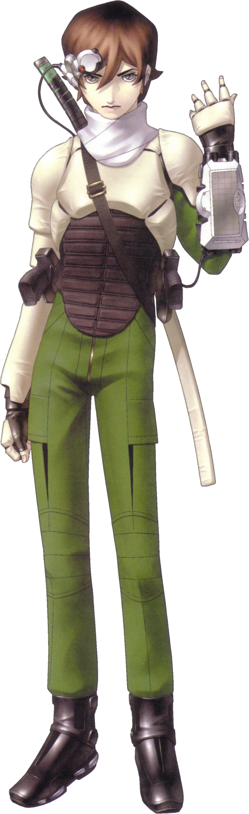
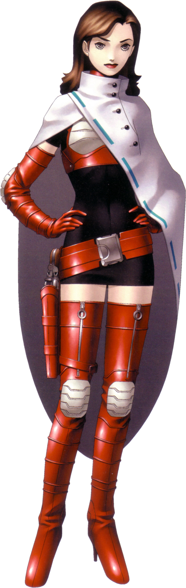
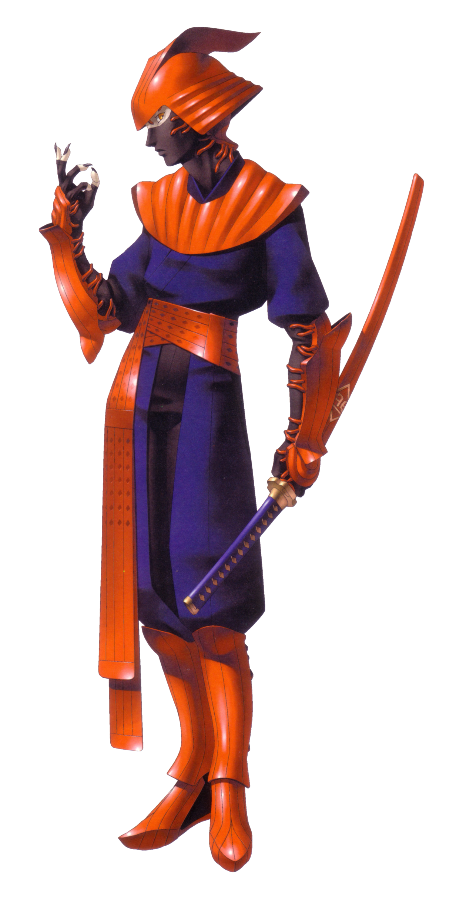
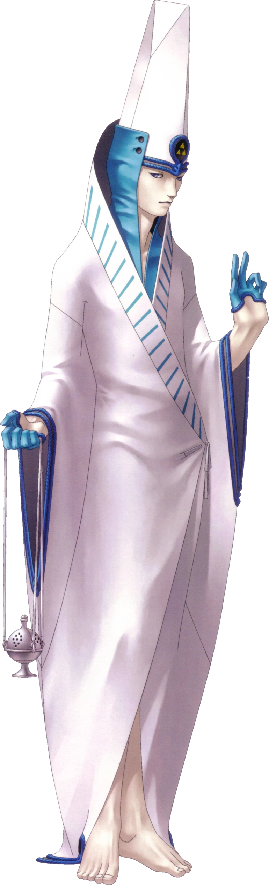
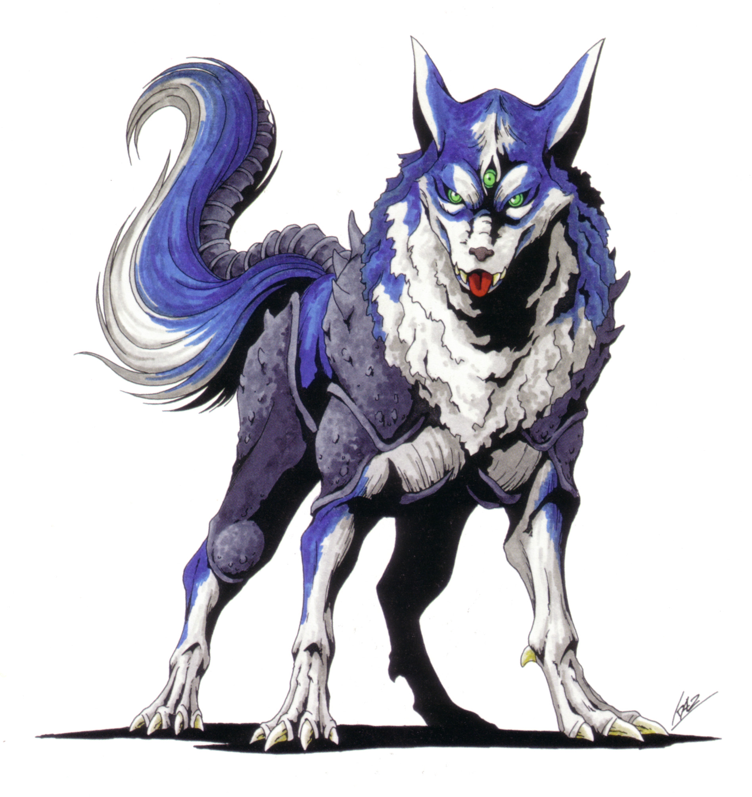

| Shin Megami Tensei | |
|---|---|

|
|
| Nome original: | 真・女神転生 |
| Ano de lançamento: | 1992 no Japão e 2014 no Ocidente |
| Plataforma(s): | Super Famicom, Turbo CD, Sega CD, PlayStation, Game Boy Advance, Wii, PlayStation 3, PlayStation Portable, PlayStation Vita, iOS, Android e Nintendo Switch |
Shin Megami Tensei
Shin Megami Tensei é o primeiro jogo da série de jogos Shin Megami Tensei desenvolvido pela Atlus. O jogo foi refeito para múltiplas plataformas e vários de seus recursos influenciaram fortemente outros spin-offs de Megami Tensei.
Anteriormente indisponível em inglês, a Atlus localizou a versão de iOS e a lançou na América do Norte em 18 de março de 2014. No entanto, quem for jogar esta versão deve observar que os controles virtuais são meio desconfortáveis e muitas vezes não respondem. O jogo também pode não ser compatível com versões mais recentes do iOS.
| Contents |
|---|
1. Plot
A história começa mostrando um sonho em que o protagonista é conduzido por um corredor de difícil visibilidade para encontrar um homem crucificado, um homem torturado por demônios e uma mulher que promete estar com ele eternamente.
Ao acordar, a história começa em Tóquio quando o protagonista verifica seu e-mail e vê que um homem misterioso que se autodenomina Stephen enviou um suspeito "Programa de Invocação de Demônios" para todos aqueles que desejam usá-lo. Intrigado, o protagonista faz o download em seu laptop antes de sair para comprar algo que sua mãe pediu. Lá fora, fica claro que algo de estranho está acontecendo em Tóquio, a polícia barricou muitas ruas e as pessoas começaram a desaparecer, junto com um recente assassinato no parque. Logo se percebeu que experimentos recentes com teletransporte abriram acidentalmente um portal para o makai e demônios começaram a vagar pelas ruas.
O Protagonista tem outro sonho em que reencontra os mesmos companheiros do primeiro sonho, só que desta vez eles interrompem um ritual de sacrifício no sonho. A mulher que deveria ser sacrificada expressa sua gratidão antes que o sonho termine. Guiado pelo misterioso Stephen, o protagonista usa o programa de invocação de demônios para convencer alguns dos demônios a se juntar a ele e lutar contra os demônios mais hostis. Ele logo se encontra com as versões do mundo real dos homens que conheceu em seu sonho e começam uma busca por algumas das pessoas desaparecidas na Tóquio infestada de demônios. Ao longo do caminho, ele conhece uma mulher chamada Yuriko, que afirma ser a mulher que ele conheceu em seu sonho e que pretende cumprir sua promessa de estar sempre com ele assim que puder cortar sua conexão com "o outro".
2. Personagens




